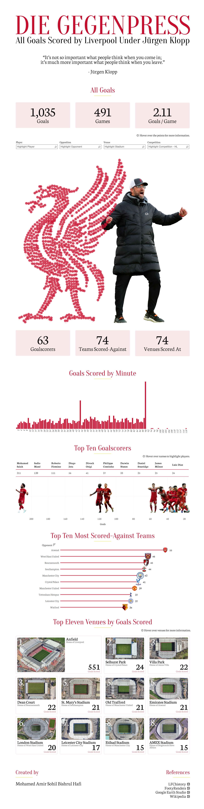

Die Gegenpress
Every goal of Klopp's Liverpool, plotted inside a Liver Bird.

The Problem
Klopp's "Gegenpressing" era at Liverpool is remembered as a philosophy and a feeling, but that identity had never been translated into an actual goal-by-goal record across his entire 491-game tenure in one place.
The scale of that record is worth stating plainly before getting into any single finding: 1,035 goals from 63 different goalscorers, against 74 different opponents, at 74 different venues. That's not a small, easily-summarised dataset. It's roughly the entire scoring output of a major European club across the better part of a decade.
The Approach
Every one of the 1,035 goals scored during Klopp's tenure is plotted as an individual point within a Liver Bird silhouette, filterable by player, opponent, venue, and competition, backed by supporting breakdowns: goals by minute, top scorers, most-scored-against opponents, top venues.
The Outcome
The minute-by-minute breakdown backs the reputation with actual data. Goals cluster sharply toward the end of each half, and the single tallest bar on the entire chart sits in second-half stoppage time. This shows the same late-game clustering seen in national-level data elsewhere in the portfolio (the World Cup goals project shows an identical pattern). Mohamed Salah's 211 goals are nearly double the next-highest scorer (Sadio Mané, 120). Arsenal, not a traditionally weaker opponent, are the team Liverpool scored against most under Klopp, with 55 goals. Anfield alone accounts for 551 of the 1,035 goals — 53%, more than every other venue combined.
The single tallest bar on the entire chart sits in second-half stoppage time, showcasing the visual signature of a team built to break opponents down late.